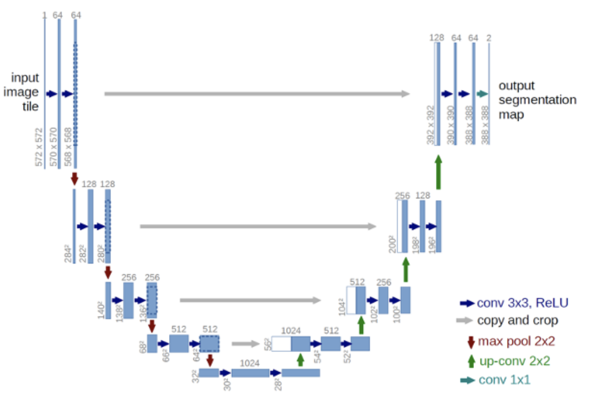

2025-04-09
Classification
一张图必须要看全了才能有综合的判断. 我们希望到最后一个 Pooling 后每个 pixel 的感受野都是全图.
三个 \(3\times 3\) 的卷积层的感受野为 \(7\times 7\)，和一个 \(7\times 7\) 的卷积层相同.
但是三个 \(3\times 3\) 的卷积层的非线性更强，并且参数量更少. \(3\times 3^2=27\) 而 \(7^2=49\). 所以实际上我们用更少的参数，得到了更强的表达能力.
于是 VGG 和 AlexNet 相比的优势就在于此. VGG 表明要逐渐对信息进行提取和抽象，使得感受野逐级变大.
Resnet 中，每次使用 Stride=2 的卷积时，Channel 数量提升. 于是 Neuron 数量只会减半，并且感受野增大一倍.
最初的 Resnet 先用了一个 Stride=2 的 \(7\times 7\) 卷积，然后每个残差块由两个卷积层组成，每若干个残差块就安排一次 Stride=2 的卷积. 最后降低到 \(7\times 7\times 512\) 之后每个 Channel 做一个全局的池化然后进入全连接. 于是一个有关模型大小的值就是每多少个残差块安排 Resolution 的减半.
但是空间开销和参数量是随着这个值线性增长的.
"Bottleneck" 层：先从 \(c\) 个 Channel 做 \(1\times 1\) 卷积变成 \(c/4\) 个 Channel，然后再 \(3\times 3\) 卷积，最后再 \(1\times 1\) 卷积回 \(c\) 个 Channel. 然后再加上原来的输入.
分析一下使用 Bottleneck 的一个节省. 参数量的话，原本是 Residual Block 是 \(2\times 3^2c^2=18c^2\)，而现在是 \(c^2/4+9c^2/16+c^2/4=17/16c^2\)；而空间的话，原本是 \(2w^2c\)，而现在是 \(w^2(c/4+c/4+c)=3/2w^2c\). 这个对加深层数有很大的帮助！
于是 Resnet 用诸多的技巧成功加深了深度.
Mobile Net 尝试解决的问题是如何在边缘设备上实现这些东西，比如手机，比如自动驾驶. 在自动驾驶上，不仅空间受到限制，推理的时间也非常短（要在 0.1s 完成一次推理，只能最多有若干亿的参数）.
我们也可以尝试去搜索出一个比较好的简化的网络.
Neural Architecture Search：将网络的变化看作强化学习中的动作，然后做试训练的结果得到 Reward. 但这也是一个很复杂的事情.
Segmentation
将有相同语义的 pixel 给 group 成同一个 mask.
Semantic Segmentation：将不同的语义给分割开来.
Instance Segmentation：要把不同的个体实例给分割开来.
两者结合起来就是既要分割开来又要追求每个个体的语义.
语义分割的训练集由于标注代价高，所以类别会很少.
Auto-Encoder：将输入 \(x\) 经过 Encoder，维数降低变成 \(z\)，然后再经过 Decoder 得到 \(\tilde x\). 本质是因为原始 \(x\) 存在大量冗余. 于是我们提取出高度凝练的信息，就能尽量还原出输入. 如果 \(\dim z\) 太小，那么可能会出现很多不可逆的信息丢失.
这样的东西可以用来处理语义分割. 而且由于语义分割的输出只需要每个 pixel 做分类，所以确实不怕信息的压缩.
Encoder 是一种下采样（Downsampling）. Pooling 就是一种 Rule based 的下采样. 而比如 CNN 的带有 Striding 的卷积，就是一种可学习的下采样.
而 Decoder 是上采样（Upsampling）. Rule based，比如 Max Unpooling 就非常不靠谱. 我们考虑如何做可学习的上采样. 反卷积（Transposed Conv）.
我们把 input 的每个 pixel，乘上 \(3\times 3\) 卷积核的九个数上，然后做一个滑动窗口的贡献. 注意比如我们要使用 Stride=2，不然图就不会变大.
本质上是考虑如果将其写成矩阵形式，其中 \(B\) 为 kernel. \(A\times B=C\)，那么就是交换要对 kernel 所代表的矩阵做一个转置，就能做 \(B^TC^T\) 的矩阵乘法就能得到 \(A^T\) 的大小.
这样的好处是，首先 Memory 变小了.
然后每个 Pixel 都有了一个上下文 / 周遭的信息，有一个很大的感受野.
但是有一个问题，这样子就变成纯给一个向量然后生成一张图片了，而这个向量只是拥有一个全局信息而已，就很不靠谱.
UNet：添加一个从对应的 Encoder -> Decoder 的 Skip Link，然后 Encoder 的图 concatenate 到 Decoder 的输出. 这样就不需要记住每一个 Pixel 的神秘细枝末节的空间信息，并且也着实让答案变得更精确. 并且也没有显著增加开销.

再看一下如何选择准确率. 我们发现 per pixel 的 \(\frac{TP+FN}{TP+FN+TN+FN}\) accuracy 有一个问题，就是不同类别的占比太不均匀了，出现较多的类别占比也太大（比如草原的照片就 accuracy 全在看草）.
对于每个 Mask，IoU：\(\frac{|t\cap p|}{|t\cup p|}\). 其中 \(t\) 为 target，\(p\) 为 prediction. 于是我们就是对于每个 Mask 去做统计 Accuracy. 然后我们再对于每个类别，按照其所有 Ground Truth 中的所有 Mask 的平均 IoU. 然后再所有类别再平均一下，得到最终一个较为均衡的 IoU，称为 mIoU.
mIoU 其实很难. coco 数据集上做到 \(50\%\) 就很不错了.